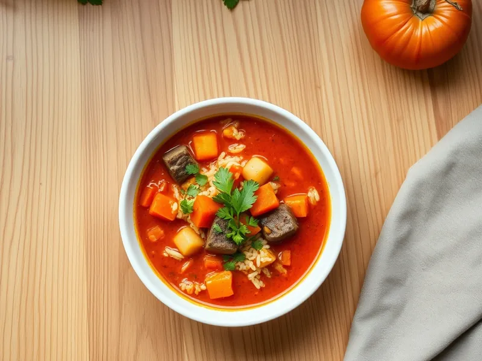

Мастава
Узбекский густой суп с бараниной, рисом, помидорами и зирой
90 мин6 порц.340 ккал на порциюБ 16 · Ж 19 · У 27Среднеазиатская кухня
Открыть в приложении: порции, таймеры, список покупок
Продукты на 6 порц.
- Баранина500 г
- Рис100 г
- Картофель2 шт
- Морковь2 шт
- Лук репчатый2 шт
- Помидоры2 шт
- Растительное масло3 ст. л.
- Зира1 ч. л.
- Соль1,5 ч. л.
- Вода2000 мл
- Кинза по желаниюпо вкусу
Как готовить
- Нарежьте баранину мелкими кубиками. Обжарьте в кастрюле с толстым дном на разогретом масле на сильном огне 8 минут до румяной корочки.
- Добавьте нарезанный полукольцами лук и обжаривайте 5 минут на среднем огне до золотистого цвета.
- Положите морковь соломкой и помидоры кубиками, тушите 7 минут, пока помидоры не пустят сок.
- Залейте горячей водой, добавьте зиру и соль, доведите до кипения и варите на слабом огне 40 минут.
- Положите картофель кубиками и промытый рис. Варите 20 минут, пока рис не станет мягким, а суп не загустеет.
- Дайте настояться 10 минут и посыпьте кинзой при подаче.
Совет. В Узбекистане маставу подают с ложкой кислого молока или сметаны: она смягчает жирность баранины.